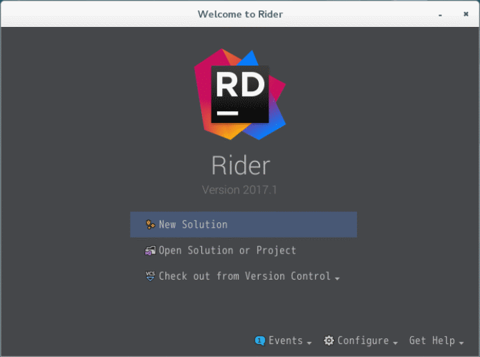
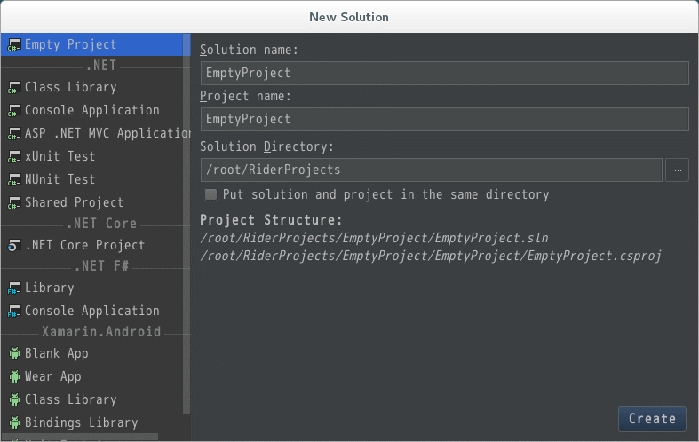
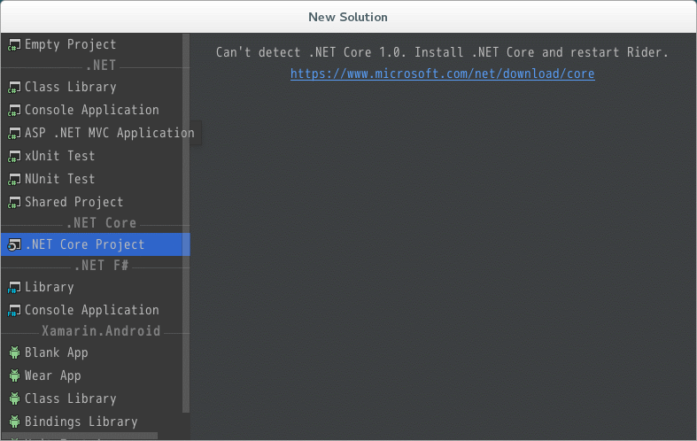

Introduction
前回はJetBrains Rider 2017.1をインストールしました。
今回はプロジェクトを作成します。
Preparation
まずはRiderを起動し、New solutionを選択。

{kind=link}
プロジェクトの作成ダイアログが表示されます。

{kind=link}
.NET Core Projectを選択します。 しかし、.NET Coreがインストールされていないことが通知されますので、Riderを終了して、.NET Coreをインストールします。

{kind=link}
表示されていたhttps://www.microsoft.com/net/download/coreに移動し、Linuxへのインストール方法をチェックします。
Install .NET Core
RHELへのパッケージインストール方法が記載されていますので、その通り実行します。 しかし 結論から言えば、https://www.microsoft.com/net/download/coreでは、ダメです。 例えば、インストールコマンドを入力すると、 [code lang=”sh”] $ sudo yum install rh-dotnetcore10 読み込んだプラグイン:langpacks, product-id, search-disabled-repos, subscription-manager Repo rhel-rs-for-rhel-7-server-eus-rpms forced skip_if_unavailable=True due to: /etc/pki/entitlement/7836591386407218947-key.pem Repo rhel-7-server-extras-rpms forced skip_if_unavailable=True due to: /etc/pki/entitlement/7836591386407218947-key.pem Repo rhel-ha-for-rhel-7-server-eus-rpms forced skip_if_unavailable=True due to: /etc/pki/entitlement/7836591386407218947-key.pem Repo rhel-7-server-eus-rpms forced skip_if_unavailable=True due to: /etc/pki/entitlement/7836591386407218947-key.pem Repo rhel-7-server-rt-beta-rpms forced skip_if_unavailable=True due to: /etc/pki/entitlement/7836591386407218947-key.pem Repo rhel-rs-for-rhel-7-server-rpms forced skip_if_unavailable=True due to: /etc/pki/entitlement/7836591386407218947-key.pem Repo rhel-ha-for-rhel-7-server-rpms forced skip_if_unavailable=True due to: /etc/pki/entitlement/7836591386407218947-key.pem Repo rhel-7-server-rpms forced skip_if_unavailable=True due to: /etc/pki/entitlement/7836591386407218947-key.pem Repo rhel-7-server-rt-rpms forced skip_if_unavailable=True due to: /etc/pki/entitlement/7836591386407218947-key.pem https://cdn.redhat.com/content/beta/rhel/server/7/x86\_64/rt/os/repodata/repomd.xml: [Errno 14] curl#58 - “unable to load client key: -8178 (SEC_ERROR_BAD_KEY)” 他のミラーを試します。 警告: 一致するものが見つかりません: dotnetcore No matches found [/code] パッケージが見つかりません。 実は、RHELの場合、これだけではダメで、サブスクリプションを再登録し、リポジトリへ.NET Coreのチャネルを登録する必要があります。 CHAPTER 1. INSTALL .NET CORE 1.0 ON RED HAT ENTERPRISE LINUX また、Riderが対応する.NET Coreは1.1です。 これを踏まえて説明します。
サブスクリプションの再登録
[code lang=”sh”] $ subscription-manager unregister $ subscription-manager clean # RedHatのアカウントを入力 $ subscription-manager register 登録中: subscription.rhsm.redhat.com:443/subscription ユーザー名: XXX@YYY.ZZZ パスワード: このシステムは次の ID で登録されました: XXXXXXXX-YYYY-ZZZZ-AAAA-BBBBCCCCDDDD # 日本語環境なら、subscription-manager list –available | egrep “サブスクリプション名|プール ID” $ subscription-manager list –available | egrep “Subscription Name|Pool” サブスクリプション名: Red Hat Enterprise Linux Developer Suite プール ID: XXXXXXXXXXXXXXXXXXXXXXXXXXXXXXXX subscription-manager attach –pool=XXXXXXXXXXXXXXXXXXXXXXXXXXXXXXXX サブスクリプションが正しく割り当てられました: Red Hat Enterprise Linux Developer Suite [/code]
リポジトリの登録
[code lang=”sh”] # workstationなら -server- を -workstation- に変更 $ subscription-manager repos –enable=rhel-7-server-dotnet-rpms # ついでにベータのリポジトリを無効 $ subscription-manager repos –disable=rhel-7-server-rt-beta-rpms [/code]
scl-utilsのインストール
[code lang=”sh”] $ yum install scl-utils [/code]
.NET Coreのインストール
.NET Core 1.1をインストールします。
- 誤) dotnetcore10
- 正) dotnetcore11
です。 [code lang=”sh”] $ yum install rh-dotnetcore11 -y [/code]
.NET Coreの有効化
まだこの状態では.NET Coreは使えません。下記のコマンドを実行して、.NET Coreを有効化します。 [code lang=”sh”] $ scl enable rh-dotnetcore11 bash [/code] 上記コマンド実行後、同一のシェルのみで、dotnetが使えます。 逆を言えば、別のシェルを立ち上げても、dotnetは使えません。 毎回、上記コマンドを実行するのは面倒なので、 [code lang=”sh”] $ source scl_source enable rh-dotnetcore11 [/code] を実行すれば良い、と前述のRedhatのページに書いてあるのですが、何故か効果がありません。 なので、シェルを立ち上げる際に、毎回自動で実行されるよう、**~/.bashrc**にコマンドを追記します。 [code lang=”sh”] $ su - $ vi ~/.bashrc [/code] viを起動し、末尾に [code lang=”sh”] source scl_source enable rh-dotnetcore10 [/code] を追記します。 そして、シェルを立ち上げ直して、dotnetのバージョンを確認します。 [code lang=”sh”] $ dotnet –version 1.0.0-preview2-1-003177 [/code]
Install Mono
Extra Packages for Enterprise Linuxの追加
[code lang=”sh”] $ cd ~/ $ wget http://ftp-srv2.kddilabs.jp/Linux/distributions/fedora/epel/7/x86\_64/e/epel-release-7-9.noarch.rpm $ rpm -ivh epel-release-7-9.noarch.rpm $ rm epel-release-7-9.noarch.rpm [/code]
yum install yum-utils
Mono 4.8
[code lang=”sh”] # rpm –import “http://keyserver.ubuntu.com/pks/lookup?op=get&search=0x3FA7E0328081BFF6A14DA29AA6A19B38D3D831EF" # yum-config-manager –add-repo http://download.mono-project.com/repo/centos/ [/code]
Mono 5.0
[code lang=”sh”] # rpm –import “http://keyserver.ubuntu.com/pks/lookup?op=get&search=0x3FA7E0328081BFF6A14DA29AA6A19B38D3D831EF" # yum-config-manager –add-repo http://download.mono-project.com/repo/centos7/ [/code]
Mono
[code lang=”sh”] yum install mono-complete -y
mono –version Mono JIT compiler version 5.0.0 (Stable 5.0.0.100/9667aa6 Thu May 11 10:16:39 UTC 2017) Copyright (C) 2002-2014 Novell, Inc, Xamarin Inc and Contributors. www.mono-project.com TLS: __thread SIGSEGV: altstack Notifications: epoll Architecture: amd64 Disabled: none Misc: softdebug LLVM: supported, not enabled. GC: sgen (concurrent by default) [/code]